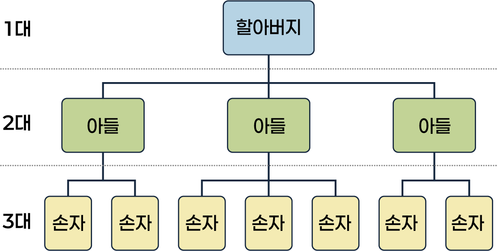

병역명문가란?
3대(할아버지, 아들, 손자) 모두가 현역 복무를 성실히 마친 가문을 말합니다.
본 서비스는 자가진단용이며, 정확한 결과는 병무청 심사 후 확정됩니다.
개인정보 수집 및 이용 동의 (필수)
본 자가진단 서비스는 병역명문가 선정 기준 충족 여부를 간략하게 확인하기 위한 목적으로 최소한의 정보만을 수집하며 입력하신 정보는 일체 저장되지 않습니다.
주의: 본 진단 결과는 참고 자료이며, 실제 결과와 다를 수 있습니다.
📢 유의사항
※ 1대(할아버지)를 기준으로 2대(아들), 3대(손자) 직계비속 남성 전원이 현역으로 복무를 마쳐야 합니다. 
※ 입력한 정보는 저장되지 않으며, 진단용으로만 사용됩니다.
모든 항목을 빠짐없이 선택해 주세요.
💡 1대 범위 안내
💡 2대 범위 안내
| 관계 | 병역이행 |
|---|
💡 3대 범위 안내
| 관계 | 병역이행 |
|---|